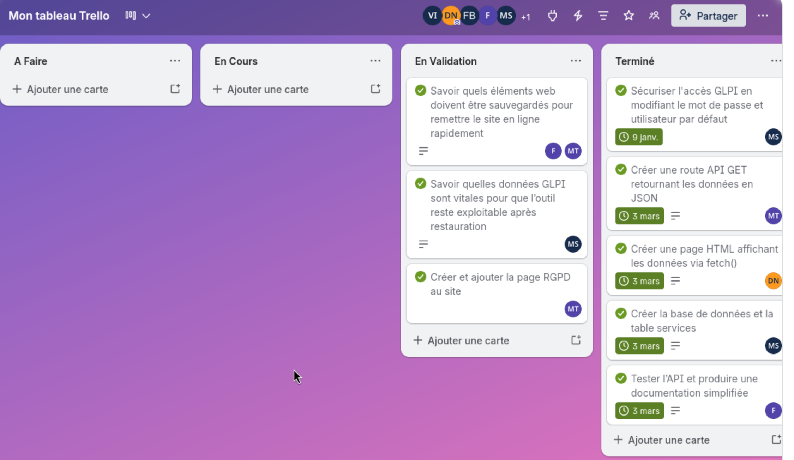
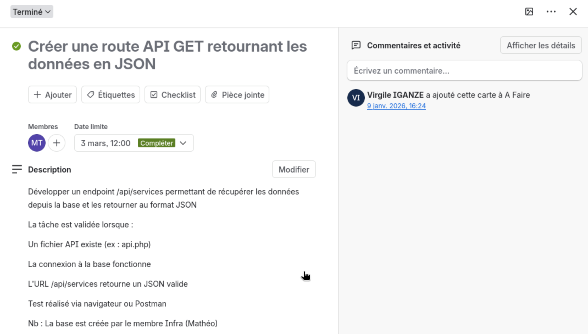

Planification des activités
Réalisation en cours de formation - Hackathon BTS SIO
En qualité de chef de projet pour l'équipe Altis, j'ai pris en charge la planification opérationnelle complète du projet dans un contexte de contrainte temporelle forte (livrables attendus à chaque séance).
Décomposition en tâches SMART : j'ai structuré l'ensemble du projet en tâches répondant aux critères SMART (Spécifiques, Mesurables, Atteignables, Réalistes, Temporellement définies). Chaque tâche était associée à un responsable, une échéance et un critère de validation explicite, évitant toute ambiguïté sur la définition du "terminé".
Outil de suivi - Tableau Trello Kanban : j'ai mis en place un tableau structuré en 4 colonnes, ce qui permettait de distinguer la validation de la simple complétion :
- À faire - tâches planifiées pour la séance en cours
- En cours - tâches actives avec responsable assigné
- En revue - tâches à valider (livrable à vérifier)
- Terminé - tâches closes avec preuve de réalisation
Rituel de pilotage par séance : en début de chaque séance, je définissais les objectifs prioritaires. En fin de séance, un point d'avancement rapide (moins de 5 minutes) permettait de mettre à jour le tableau et de replanifier si nécessaire. Ce rituel maintenait une visibilité partagée sur l'état réel du projet.
Résultats obtenus :
- Objectifs de séance atteints et traçables (ex. : routes GET de l'API fonctionnelles en séance 2)
- Répartition des rôles claire, réduisant les temps morts et la duplication d'effort


Réalisation en milieu professionnel
À compléter